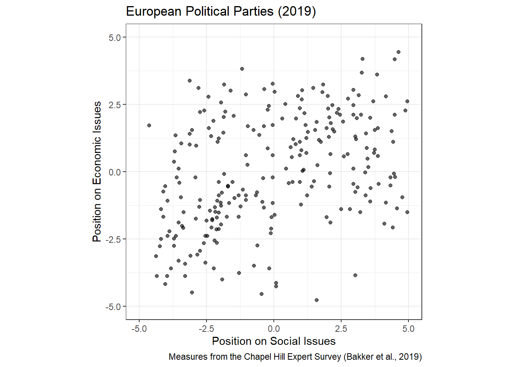
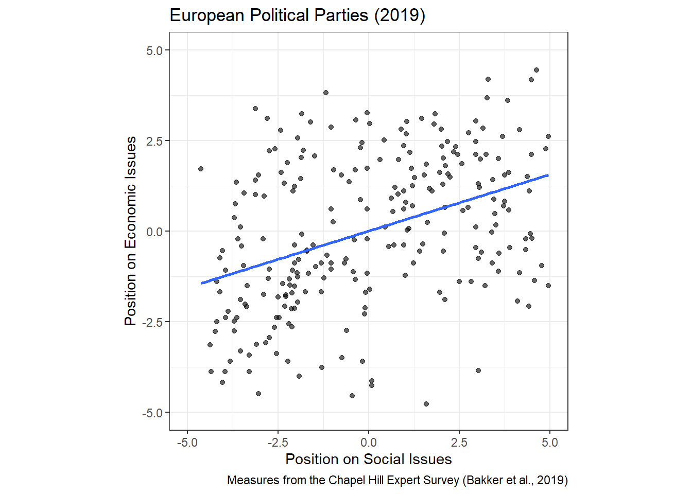
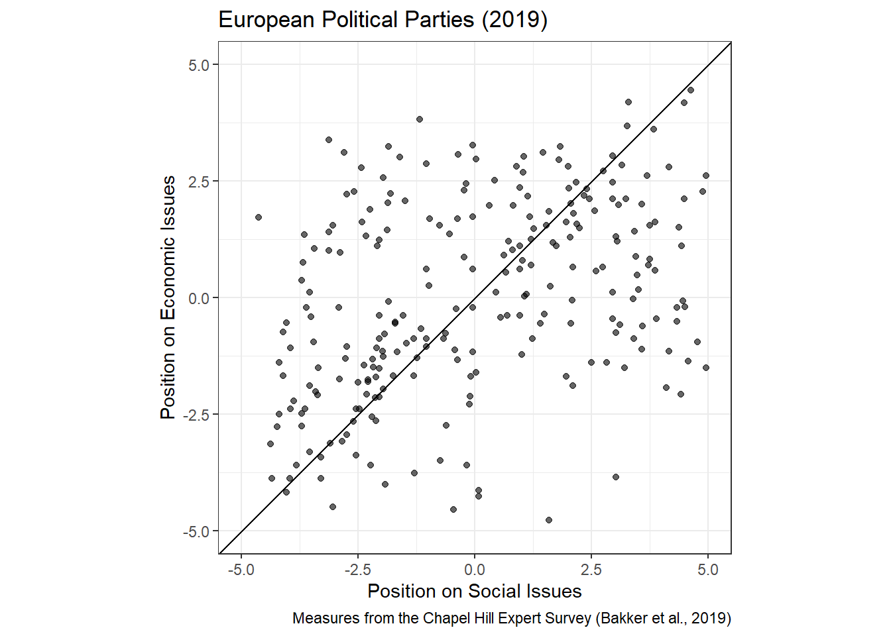
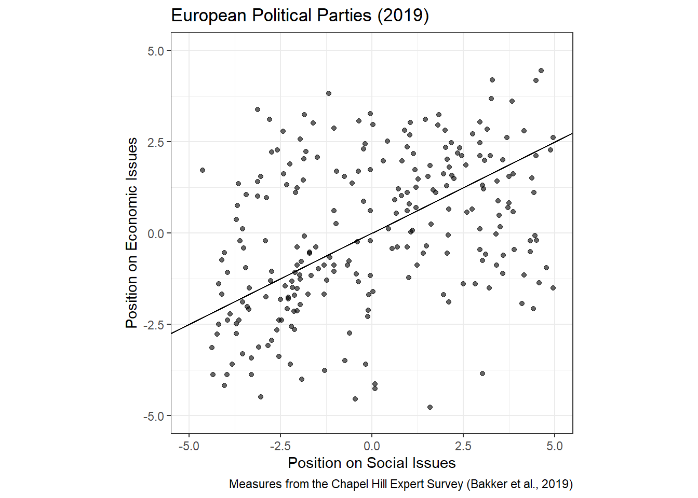

# load libraries
library(tidyverse)
library(here)The Line of Best Fit
Data
The data we’ll use to illustrate the linear model come from the Chapel Hill Expert Survey1 which provides expert opinions on political parties throughout Europe. Today, I want to measure the relationship between the positions of these parties on *social* issues and their positions on *economic* issues. Are parties with right-leaning social positions more likely to have right-leaning economic positions? And if so, by how much?
Plotting the data:
# Note: I created this tidy version of the dataset in R/week-07/cleanup-data.R
ches <- read_csv(
here( 'data/ches/ches-cleaned.csv' )
)
# create a scatter plot of the data
p <- ggplot(data = ches,
mapping = aes(x = social, y = economic)) +
geom_point(alpha = 0.6) +
theme_bw() +
scale_y_continuous(limits = c(-5, 5)) +
scale_x_continuous(limits = c(-5, 5)) +
coord_equal() +
labs(title = 'European Political Parties (2019)',
caption = 'Measures from the Chapel Hill Expert Survey (Bakker et al., 2019)',
x = 'Position on Social Issues',
y = 'Position on Economic Issues')
p
Adding a Line of Best Fit
Clearly, there’s a relationship. There aren’t many parties with left-wing social positions and right-wing economic positions. And there are even fewer with right-wing social positions and left-wing economic positions! But what’s the best way to describe that relationship?
Adding a geom_smooth() layer displays the “line of best fit”:
p + geom_smooth(method = 'lm', se = FALSE)
And we can use the lm() function to get the slope of that line:
lm(economic ~ social, data = ches)
Call:
lm(formula = economic ~ social, data = ches)
Coefficients:
(Intercept) social
-2.415e-16 3.125e-01 On average, parties with more right-leaning social positions also have more right-leaning economic positions. Each 1 point increase in social position corresponds to a roughly 0.3 point increase in economic position.
But where did that slope come from???
Minimizing Our Model’s Error
Our goal is to find a value of the slope parameter $\beta$ such that our model explains as much of the outcome as possible, and our residuals (the unexplained part of the outcome) are as small as possible. Put another way: we want to *minimize* our model’s total error.
If our linear model looks like this:
\[ Y = X\beta + \varepsilon \]
Then we can subtract \(X\beta\) from each side to get the residuals.
\[ \varepsilon = Y - X\beta \]
Let’s pick an arbitrary value for \(\beta\) and see what it does to the residuals:
beta <- 1
ches <- mutate(ches,
expected_value = beta * social,
residual = economic - beta * social)
knitr::kable(head(ches))| country | party | party_id | social | economic | expected_value | residual |
|---|---|---|---|---|---|---|
| 1 | PVDA-PTB | 119 | -0.4531712 | -4.5562213 | -0.4531712 | -4.1030501 |
| 1 | VU/NVA | 110 | 1.0544043 | 3.0271118 | 1.0544043 | 1.9727075 |
| 1 | AGALEV | 105 | -3.8698381 | -2.2228879 | -3.8698381 | 1.6469502 |
| 1 | VB | 112 | 2.9634953 | 0.1104453 | 2.9634953 | -2.8530500 |
| 1 | VLD/PVV | 107 | -2.5819592 | 2.2771118 | -2.5819592 | 4.8590710 |
| 1 | SP/SPA | 103 | -2.2865047 | -1.8062214 | -2.2865047 | 0.4802833 |
Note how this line looks a bit too steep. The residuals on the left are all positive and those on the right are all negative:
p +
geom_abline(intercept = 0, slope = beta)
A better line would be a bit flatter:
p +
geom_abline(intercept = 0, slope = 0.5)
It’s definitely better, but notice that not all the residuals decreased. The model got better for predicting some values and worse for others! So what’s the best way to optimize the model’s fit to the data?
The standard approach is to find the \(\beta\) value that minimizes the sum of squared errors. (We square the errors so that positive and negative values don’t cancel each other out -- any number squared is positive.)
The following code chunk computes the sum of squared errors for a given slope parameter. Play around with it a bit, changing the value of beta and seeing what happens to the SSE.
beta <- 2
ches <- mutate(ches,
expected_value = beta * social,
residual = economic - beta * social)
# print the sum of squared errors
summarize( ches,
SSE = sum(residual ^ 2) )# A tibble: 1 × 1
SSE
<dbl>
1 5880.There’s a more systematic way to do this than plugging in guesses and hunting for the best slope. And it’s called calculus. Back to the slides!
The OLS Estimator
# here's what the lm() function gave us:
lm(economic ~ social, data = ches)
Call:
lm(formula = economic ~ social, data = ches)
Coefficients:
(Intercept) social
-2.415e-16 3.125e-01 # here's what the calculus solution gives us:
sum(ches$economic * ches$social) / sum(ches$social^2)[1] 0.3125066# That is ordinary least squares (OLS)Footnotes
Hattip Ashley Pieper!↩︎